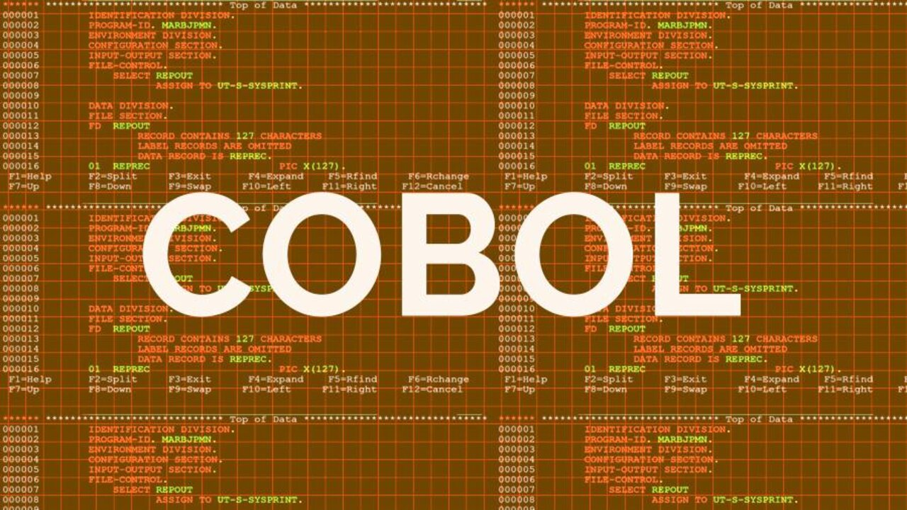

Welke programmertaal gebruikt de overheid en wat is de meest gebruikte programmeertaal?
pagina 6
Welke programmeertaal gebruikt de overheid
Welke programmeertaal gebruikt de overheid? In Nederland is de programmeertaal COBOL in gebruik bij een flink deel van de systemen van de belastingdienst. COBOL is een verouderde programmeertaal uit 1959. Toch kan COBOL nog wat voordelen hebben, COBOL is namelijk een zeer betrouwbare programmeertaal die veel informatie kan verwerken en het kan voor een gedeelte geintegreerd worden in modernere programmeertalen. Toch is COBOL oud en brengt het ook veel nadelen met zich mee, veel nieuwe IT ers weten bijvoorbeeld niet hoe COBOL werkt en het duurt erg lang om COBOL te compileren. De overheid zal er goed aan doen om COBOL te vervangen maar vooralsnog is COBOL wel een betrouwbare programmeertaal.

Wat is de meest gebruikte programmeertaal
De meest gebruikte programmeertaal is met een flink marge Python. Python wordt maar liefst 30,44% van de tijd gebruikt en dat is bijna dubbel zoveel als de een na meest gebruikte programmeertaal Java die 16,76% van de tijd wordt gebruikt. Ook worden javascript en C# veel gebruikt.
Over Python
Python is ontwikkeld in 1991 door Guido van Rossem. Hij heeft python ontwikkelt om een gratis programmeertaal te maken die makkelijk te lezen is en overal voor gebruikt kan worden. De naam python komt van: Monty pythons flying circus (een comedy serie). Dit was Guide van Rossems favoriete televisieprogramma.
Welke Python versies bestaan er
De eerste versie van Python is geschreven in de programmeertaal C. Omdat deze versie in C geschreven is wordt hij ook wel CPython genoemd. Dit is de grootste en meest gebruikte versie van python. Deze versie van python is beschikbaar om te downloaden op de officiele Pythonwebsite, en staat voor geinstalleerd op de meeste uitgaven van Linux en Mac OS. Van deze versie van python bestaan er twee veelgebruikte versies, versie 2 en versie 3. Doordat versie 3 een aantal veranderingen toebrengt die niet samengaan met versie 2, is versie 3 geen vervanging van versie 2. Als je een Pythonprogramma uit wilt voeren is het belangrijk om te weten welke van deze versies van Python gebruikt wordt in het programma.
Waarom is Python zo populair
Python is ontwikkeld om simpel te zijn en dus eindigen statements aan het eind van de zijn in plaats van een teken erachter. Python komt hand in hand met en uitgebreide bibliotheek van alles standaard te kunnen bewerken. Het is erg makkelijk om in Python herbruikbare code te typen. Doordat de meesten van de bibliotheken die door mensen geschreven worden, gratis en vrij gebruikt kunnen worden door anderen mensen, worden de mogelijkheden van de bibliotheek voortdurend groter. Hierdoor wordt Python een programmeertaal die voor het snel ontwikkelen van een nieuwe applicatie kan worden gebruikt, zonder dat de daarbij al de broncode onleesbaar wordt gemaakt. Python is een 'general-purpose' programmeertaal, Dat betekent dat python voor bijna alles gebruikt kan worden. Je kan er namelijk tekst mee verwerken of je kan afbeeldingen en getallen aanpassen en veranderen, maar je kan er zelfs ook wiskundige vergelijkingen mee oplossen. Het is dan ook geen mysterie dat bijna alle bekende tech-bedrijven python gebruiken. Bijvoorbeeld Spotify, Instagram en Uber maken gebruik van python in hun applicaties om hun diensten te versterken met de mogelijkheden van Python.
Python specificaties
Python is een programmeertaal op hoog niveau daardoor is Python op bijna elk computer en besturingssysteem te gebruiken. Hierdoor is Python een makkelijk leesbare programmeertaal. Python is een Geinterpreteerde programmeertaal dat betekent dat Python code niet omgezet hoeft te worden in een andere taal. Bij veel verschillende programmeertalen moet dit wel gebeuren. Python haalt hier een voordeel uit aangezien de geschreven stukken code snel getest kunnen worden, omdat de code zo snel te testen zijn kun je snel en makkelijk controleren en herschrijven. Python is Object-georienteerd waardoor het mogelijk is om objecten aan te maken en deze eigenschappen te geven. Deze eigenschappen kunnen zowel data zijn als functies. Door deze objecten kan er snel en makkelijk nieuwe worden toegevoegd zonder dat er hele nieuwe code voor geschreven moet worden. Hierdoor wordt de code veel overzichtelijker en makkelijk te begrijpen. Ook is python interactief dit betekent dat je vanuit de command prompt direct met de python interpreter kan communiceren en dus hoef je geen code te schrijven om wel de volledige functionaliteit te kunnen gebruiken.
Conclusie
In conclusie, Python is de meest gebruikte programmeertaal en wordt in 30,44% van de gevallen gebruikt. Python is in 1991 gemaakt in Nederland door Guido van Rossem en heeft sinds toen veel verschillende updates gehad. Python is nog steeds aan het groeien in populariteit, te danke aan het feit dat het makelijk te gebruiken is en gratis te downloaden. Ook is python erg snel en kan in veel verschillende projecten gebruikt worden. Tevens is python erg makkelijk te leren omdat het simpel en een programmeertaal op hoog niveau is.